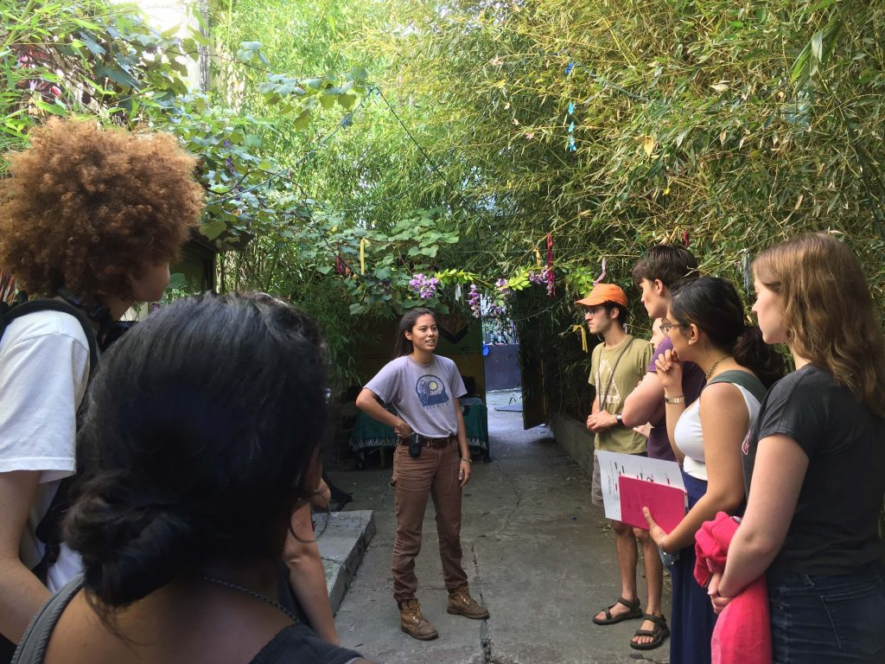

PACC
Introduction
Cooperatives have deep historical roots in communities of color, responding to and resisting racial and economic injustice. And yet, as grassroots economies regain momentum in the US, race and class struggles continue to undermine the participation of people of color. While white-led, multi-racial cooperatives and other grassroots economic organizations say they are committed to racial and economic justice, they often perpetuate abiding forms of racial exclusion. How might these organizations be encouraged to “see” race and racial injustice and then act differently? Further, how does this racial struggle intersect with the struggle of “alternative” economies to gain recognition as viable responses to economic injustice?
‘After Work: Seeing Race in Grassroots Economies’ brings together local cooperatives, social practice artists, and Haverford faculty and students in Political Science and Visual Studies to map and unpack how the aesthetics, practices, and structures of area institutions reinforce white supremacy and thus fall short of their community-oriented values. Moreover, the burden of educating organizations about their racialized practices typically falls on people of color themselves as an additional labor that occurs outside the workday and is rarely recognized. After Work explores ways of refiguring and revaluing such relations by showing how communities of color have held, do hold, and can hold institutions that serve them accountable. ‘After Work’ insists that equity and access must be central to redistributions of power, compensation, and labor.
Collaborators
Events
Open Engagement Conference 2018 w/ Stephanie Bursese, Craig Borowiak, Jamila Medley & John Muse
Conference Participation
5.9 - 5.12
Queens Museum, Bronx, NY
Stephanie Bursese, Craig Borowiak, Jamila Medley and John Muse attended the Open Engagement Conference 2018, an artist-led initiative that expands dialogue on the field of socially engaged art.
In its 10th year – the last in its current form – OE will bring together hundreds of artists, activists, educators, students, organizations, institutions, and thinkers from every corner of the globe. This year’s program will explore the theme of SUSTAINABILITY, as well as take stock of the field of socially engaged art.
OE 2018 will feature a selection of focused trainings to provide attendees with tools for more impactful and sensitive creative work anchored in community-building and social justice, as well as opportunities for intimate discussion during our Dinner Conversation Series. In the evenings, femme-fronted, queer-inclusive nightlife organizers will host celebrations, guided by the belief that transformative acts of change are deeply indebted to these marginal spaces of collective joy.
Read lessPhiladelphia Area Cooperative Alliance (PACA): Jamila Medley, Executive Director
Non-Profit Partner
9.4~
1315 Walnut St Unit 320, Philadelphia, PA
The Philadelphia Area Cooperative Alliance (PACA) is a cooperative whose members are co-ops in the Philadelphia region. PACA is also a 501(c)3 nonprofit dedicated to growing the cooperative economy. Learn more about our members on our Membership page.
Our mission is to improve the lives of people in the Philadelphia region by supporting democratically organized businesses, promoting the principles of the international cooperative movement, and growing the cooperative economy.
We envision a vibrant and growing network of cooperative enterprises that operate in all sectors of the economy to build a better world— providing essential services, strengthening democratic organizations, creating quality jobs, building community wealth, reducing poverty, strengthening our local economy, protecting the environment and increasing community engagement.
Read lessMaia Chao, Lead Artist
Artist in Residence
9.4~
Maia Chao is an interdisciplinary artist from Providence, RI whose work— often playful and absurd— uses existing institutions and their systems as sites of social intervention and critique. Through video, performance, installation, and social practice, she is dedicated to art that models counter-institutions, alternative spaces, and redistribution.
Chao has shown at the Hudson Walker Gallery, Provincetown Art Museum, Granoff Gallery at Brown University, Museum of the Rhode Island School of Design, and RI Convention Center. A Fulbright Grantee (2014) and RISD Presidential Scholar (2015-17) she recently completed the Fine Arts Work Center Fellowship (2017). She is currently commissioned by Boston’s SMFA for the traveling exhibition, Museum of Capitalism (Fall 2018). In May 2018, Chao co-presented on the pilot of Look at Art. Get Paid. at the social practice conference, Open Engagement (Queens Museum). The work is now in development at art institutions in NYC. Currently, Chao is a Van Lier Fellow of the Asian American Arts Alliance and National Art Strategies Fellow. She holds a BA from Brown University and an MFA from the Rhode Island School of Design.
Read lessJosephine Devanbu, Lead Artist
Artist in Residence
9.4~
Josephine Devanbu is an artist trying to disentangle arts funding from white-dominated institutions and decision-makers. She co-runs Look At Art. Get Paid.– an artist project that pays folks who don’t normally visit museums to come critique them– with Maia Chao.
Devanbu is a member of Dirt Palace in Providence, RI.
“The Dirt Palace feminist art space was founded in 2000 in an abandoned library building in the Olneyville neighborhood of Providence. The Dirt Palace is a self-organized collective that supports women artists by providing affordable studio space, facilities, shared resources, opportunities, a culture of cooperation, and maintains visibility in the community through a committed public art presence and long term relationships. Over the past 17 years, the Dirt Palace has served as an incubator for over 40 women artists and has become an underground institution. Members work together to create an environment conducive to challenging thoughts and radical actions in order to cultivate our personal growth as individuals and to foster the development of strong, thoughtful, independent women who use their creative awareness of the world to change it. The Dirt Palace is trans-inclusive, strives to be accountable and to work intersectionally.
At any given time there are seven artists in residence or “members” of the Dirt Palace. Together we have built and maintained studios and shared facilities that include: seven live/work artist in residence spaces, a library, a large shared kitchen, a print shop (specializing in screen print and letterpress), a music rehearsal space, a woodshop, an animation/film editing suite, and a workspace for large projects. Members co-curate the Dirt Palace Storefront Window Gallery – a monthly rotating public art exhibition space. The gallery has showcased work by hundreds of international, national and local artists as well as neighborhood groups and community organizations.”
Read lessCommunity Gardens Tour w/ Grassroots Economy Course
Tour
9.22
11-4:30pm, Philadelphia, PA - Various Sites

Craig Borowiak’s course “Grassroots Economies: Creating Livelihoods in an Age of Urban Inequality” visited prominent community gardens, urban farms, and food co-ops of the Philadelphia area, to get insights on management procedures, demographics, and interaction with the community. The group visited Five Loaves & Two Fish Garden, One Art Community Center, Urban Tree Connection (Fall Farm Equinox Festival), Mill Creek Farm, Aspen Farms, Mariposa Food Co-op.
Read lessDesign And Civic Engagement W/ Center For Urban Pedagogy
Presentation & Discussion
9.27
4:30-6pm, VCAM, Haverford College

Christine Gaspar, Executive Director of the Center for Urban Pedagogy (CUP), will discuss the organization’s work collaborating with community-based organizations to create accessible and visual explanations of complex policy and decision-making processes. She’ll show case studies and discuss how this work helps provide underrepresented communities with the tools to claim their rights, advocate for their needs, and fight for social justice.
Christine is the Executive Director of CUP. She has over fifteen years of experience in community design. Prior to joining CUP, she was Assistant Director of the Gulf Coast Community Design Studio in Biloxi, Mississippi, where she provided architectural design and city planning services to low-income communities recovering from Hurricane Katrina. In 2012, she was identified as one of the “Public Interest Design 100.” She holds Masters in Architecture and in City Planning from MIT, and a Bachelor of Arts from Brown University.
She’s been a CUP fan since 2001, and a staff member since 2009.
Image Credit: Ediwin Zheng, from CAAAV uses the Making Policy Public poster, Rent Regulation Rights, to do outreach in Chinatown.
Read lessLook At Art. Get Paid. w/ Maia Chao & Josephine Devanbu, Lead Artists
Presentation & Discussion
10.4
4:30-6pm, VCAM, Haverford College
Lead PACC Artists, Maia Chao and Josephine Devanbu, will discuss their collective and individual art practices, which share common interest in how art can model counter institutions, shift knowledge politics, and facilitate economic redistribution.
Free and open to the public. More about Look at Art. Get Paid. here.
Image Credit: Courtesy of the Artists
Read lessMapJamming Alternative Economies w/ Lauren Hudson
Workshop
10.6
10:30am-1:30pm, VCAM, Haverford College
Lauren Hudson, collective member of SolidarityNYC, held a workshop with both classes of the program combined, to approach maps from a social, political, and visual perspective, while discovering the potential manipulations, and power dynamics behind cartography. The event started with a brief presentation of the history, the meanings they possess, and their limitations; and concluded with a craft group work, where groups mapped out a region they selected using different metrics and legends, highlighting the interdisciplinary nature of visual art and political implications of it.
Read lessGrassroots Economies Course Visit w/ Jennifer Greenberg, Neighborhood Gardens Trust
Course Visit
10.25
10:00-11:30pm, VCAM, Haverford College
Jennifer Greenberg, Executive Director of Neighborhood Gardens Trust, visited Craig Borowiak’s “Grassroots Economies” class for a discussion on land precarity, land policy, land trusts and community gardens and how they contribute to the development of communities.
Read lessCenter for Urban Pedagogy (CUP) Workshop
Workshop
11.3
1-5pm, VCAM, Haverford College
Christine Gaspar, Executive Director of the Center for Urban Pedagogy (CUP), visited students from both classes of the project to explain the organization’s work, and to present the physical material they create and produce, from different perspectives. After a discussion on case studies where CUP generated “board games” that became educational tools for the communities and collaborative partners in their projects, the students started to work on their own game designs and came up with ideas in small groups, crafting board games with various supplies, under the revolving concept of cooperatives and how they function.
Read lessGrassroots Economies Course Visit w/ Jamila Medley, Director, Philadelphia Area Cooperative Alliance
Course Visit
11.6
10-11:30am, VCAM, Haverford College

Jamila Medley, Executive Director of PACA (Philadelphia Area Cooperative Alliance), visited the “Grassroots Economies” class for a discussion on cooperatives, their functions in society, and how they are operated. Topics included the international core elements of co-ops, their advantages and limitations, and food co-ops’ implications on gentrification and exclusivity.
Read less(De)Tour of Ardmore
Walking Tour
11.10
12-2pm, Various Sites, Ardmore, PA
Artists Maia Chao and Josephine Devanbu worked with professor John Muse to plan a walking tour in Ardmore, PA with Christopher Hall, Director, Process Architecture at Integrated Project Services, and Gary Williams from the Ardmore Progressive Civic Association.
From the tour assignment: In this assignment you’ll create a stop on a tour of boundaries within the unincorporated Township of Ardmore. As a class we’ll weave a (De)Tour through Ardmore that brings us up to each boundary to examine its histories, functions, and the values and assumptions embedded in it.
Think expansively about “boundaries.” There’s the brick wall, the raised curb, the stanchion, the fence, the sign, the painted line, the bright orange, the alarm, the smell of garbage, the illuminated area, the neighbor, etc. But also think about the boundaries that can’t be seen, heard, or touched. They may only exist internally, as instincts or gut feelings. These boundaries inevitably relate to the intersections of one’s identity (race, gender, class, ability). Think back to a boundary that was particularly charged for you as a child. It could be a fence that divided you and a neighbor or a scary place featured in local myths. How (if at all) might a newcomer begin to pick up on the significance of this boundary? Use insights from this exercise to think through how you might come to see stories tied into the boundary you select in this assignment.
Read less"Salt, Pepper, Ketchup" Play & Post Performance Discussion with Jamilla Medley
Field Trip
11.11
2-5pm, InterAct Theatre Company @ The Drake, 302 S Hicks St, Philadelphia, PA
Students took a trip to Center City to watch InterAct Theatre Company perform the play Salt, Pepper, Ketchup based on gentrification and food co-ops. Written by Josh Wilder and directed by Jerrell L. Henderson, the play focused on examining the consequences of urban redevelopment. The play was followed by a Q&A with the director, Jamila Medley, and cast member Fenton Li.
Read lessGrassroots Economies Course Visit w/ Stephanie Bursese, Artist & Maia Chao, Artist
Course Visit
11.29
10-11:30am, VCAM, Haverford College
Stephanie Bursese, member of Vox Populi artist collective, and After Work’s artist collaborator Maia Chao, visited Craig Borowiak’s “Grassroots Economies” class to share their personal reflections on key concepts such as value, social currency and community, cooperation, and labor, and how they relate to art economies.
Read lessGrassroots Economies Course Visit w/ Maia Chao & Josephine Devanbu, Lead Artists
Course Visit
12.4
10:00-11:30am, Haverford College, VCAM 102
Maia Chao and Josephine Devanbu, Lead PACC Artists, visited Grassroots Economies class to discuss their various art practices that play around with the idea of capitalism, and position the ways in which art encounters gentrification, exchange, and organizing.
Read lessGrassroots Economies Course Visit w/ People's Paper Co-op
Course Visit
12.6
10-11:30am, VCAM, Haverford College
The People’s Paper Co-op, an ongoing initiative by the Village of Arts and Humanities, visited the “Grassroots Economies” class to talk about their work which aims to connect formerly incarcerated individuals together with artists, civil rights lawyers, and many others to run a multitude of programs and activist events through a highly collaborative and multidisciplinary process.
Read lessICA Artist Talk: Look At Art. Get Paid.
Presentation & Discussion
3.5
6-7:30pm, Institute of Contemporary Art, 118 S 36th St, Philadelphia, PA
Even when admission fees are waived, free days at museums serve predominantly affluent, white audiences. What would happen if working class folks and POC were paid to look at art?
Maia Chao and Josephine Devanbu speak about their socially engaged art project ‘Look at Art. Get Paid.‘, with Carol Zou, from Asian Arts Initiative, at the Institute of Contemporary Art.
Read lessArchive


Reference
— Look at Art. Get Paid.
— Philadelphia Area Cooperative Alliance
— Center for Urban Pedagogy
— Black and Brown Workers Cooperative
— Neighborhood Gardens Trust
— Five Loaves and Two Fish Garden
— One Art Community Center
— Urban Tree Connection
— Mill Creek Farm
— Aspen Farms
— Mariposa Food Co-op